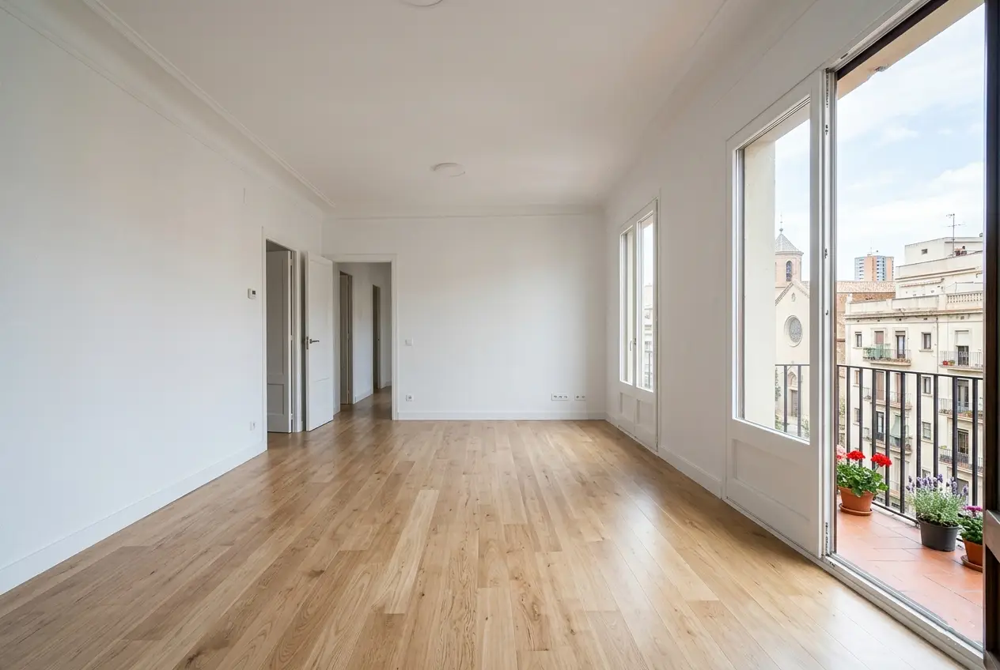
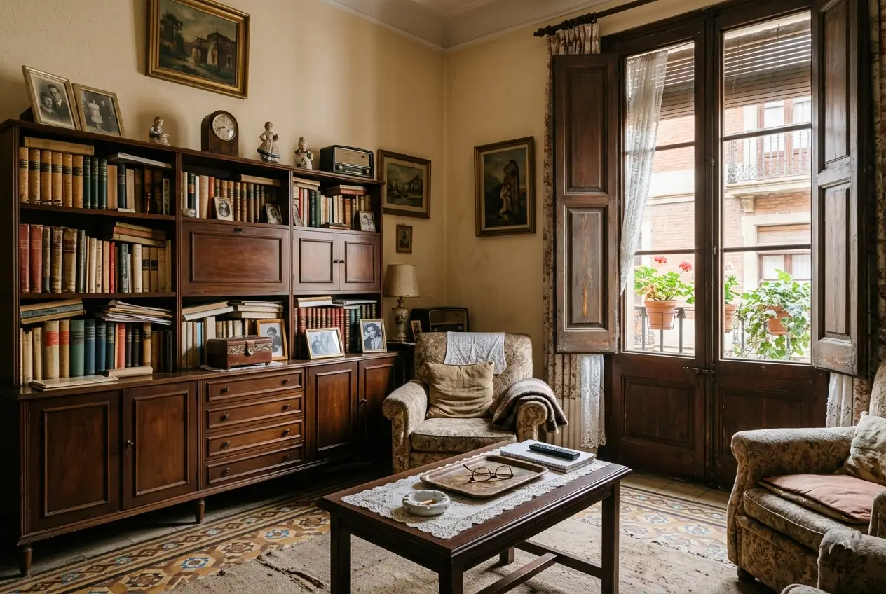
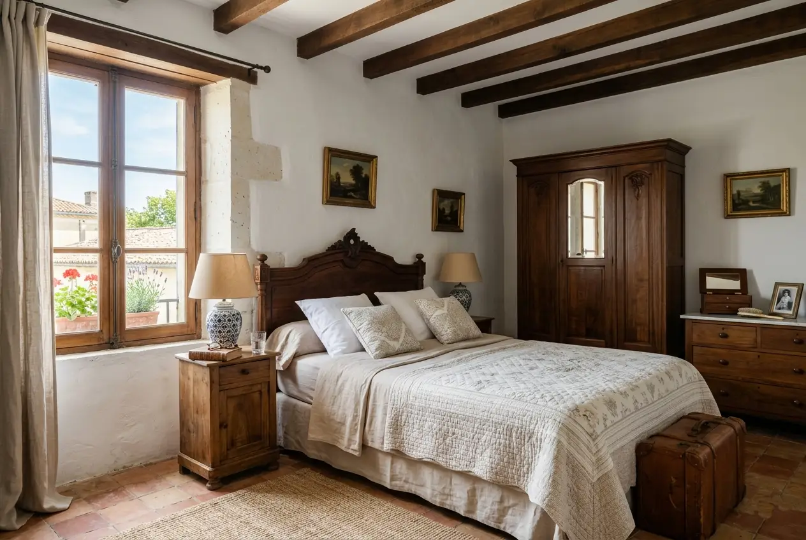

L'Hospitalet de Llobregat · Barcelonès
Buidatge de pisos a L'Hospitalet
Servei professional especialitzat a la segona ciutat més poblada de Catalunya. Solucionem els desafiaments logístics únics d'Hospitalet amb eficiència i respecte: alta densitat, pisos antics i gestió de permisos inclosa.
Per què el coneixement local és essencial
Hospitalet presenta reptes únics que requereixen experiència específica
Amb més de 21.000 hab/km², L'Hospitalet és una de les ciutats més denses d'Europa. Això afecta directament l'accés a edificis, la gestió de permisos de càrrega i descàrrega, i la coordinació amb comunitats de veïns.
L'Ajuntament d'Hospitalet té regulacions específiques per a obres menors, horaris permesos, gestió de residus i permisos de càrrega i descàrrega. El nostre equip coneix aquestes normatives al detall i gestiona tots els tràmits sense que el client s'hagi de preocupar de res.

L\'Hospitalet
Alta densitat urbana
Una de les ciutats més denses d'Europa. L'accés a edificis, la gestió de permisos i la coordinació amb comunitats requereixen una planificació minuciosa en cada treball.
Edificis dels anys 60-80
Ascensors estrets, escales sense passamans i estructures que requereixen cures especials. Tenim equips adaptats per a cada tipologia d'edifici d'Hospitalet.
Normativa municipal específica
Regulacions pròpies per a obres menors, horaris permesos, gestió de residus i permisos de càrrega i descàrrega. Ho gestionem tot sense que el client s'hagi de moure.
Logística complexa
Carrers estrets, zones de prioritat residencial i alta congestió de trànsit. Optimitzem rutes i horaris per minimitzar molèsties i maximitzar l'eficiència del treball.
Serveis
Serveis especialitzats a L'Hospitalet de Llobregat
Adaptats a les necessitats de la segona ciutat més poblada de Catalunya: alta densitat, pisos antics i desafiaments logístics propis de cada barri.
Buidatge per defunció a Hospitalet
Gestió sensible en moments difícils. Coneixem els tràmits específics d'Hospitalet i treballem amb màxima discreció a tots els seus barris, respectant els temps de la família.
Llegir guia completaNeteja per síndrome de Diògenes
Protocols especialitzats per a situacions complexes en edificis d'alta densitat. Discreció total, EPIs complets, desinfecció amb productes hospitalaris i gestió adequada de residus segons normativa municipal.
Veure protocol de neteja DiògenesCanvi d'inquilins a Hospitalet
Solucions ràpides per a propietaris i immobiliàries. Deixem l'habitatge a punt per llogar en un temps rècord, adaptant-nos als seus terminis i coordinant amb les agències que gestionin la propietat.
Saber-ne mésPintura i reformes a Hospitalet
Pintura professional adaptada a pisos antics d'Hospitalet. Materials i tècniques específics per a la tipologia constructiva dels anys 60-80. Treballs de qualitat amb mínimes molèsties per a veïns.
Saber-ne mésBuidatge urgent 24h
Servei d'emergència disponible les 24 hores a tota Hospitalet. Permisos, equip i logística gestionats en un temps rècord. Ideal per a desnonaments, lliuraments de claus urgents o situacions imprevistes.
Saber-ne mésServei per a immobiliàries
Solucions professionals per a agències immobiliàries. Tarifes especials, rapidesa garantida i coordinació perfecta perquè la propietat quedi a punt per a visites com més aviat millor.
Saber-ne mésBarris d'Hospitalet
Servei a tots els barris de L'Hospitalet
Collblanc · La Torrassa Zona d'alta densitat amb edificis dels anys 60-70. Especialistes en logística en carrers estrets i gestió de permisos en zones amb alta restricció d'aparcament. Coneixement de les comunitats més grans del sector.
Bellvitge Barri residencial amb grans comunitats i edificis dels anys 70. Experiència en buidatges d'habitatges tipus i coordinació directa amb administradors de finques. Horaris adaptats a les normatives comunitàries.
Sant Josep · Santa Eulàlia Zona cèntrica amb barreja d'edificis antics i moderns. Gestió eficient de permisos de càrrega i descàrrega en zones comercials com Gran Via. Respecte pels horaris comercials de la zona.
La Florida · Pubilla Cases Àrees residencials amb comunitats ben organitzades. Tracte personalitzat i adaptat a cada veïnat. Coneixement específic d'habitatges unifamiliars i petites comunitats.
Centre · Gran Via Cor comercial i administratiu d'Hospitalet. Especialistes en treballs en edificis històrics i zones d'alt trànsit de vianants. Coordinació perfecta amb comerços i serveis municipals.
Can Serra · Sanfeliu Zones residencials consolidades amb edificis de diferents èpoques. Mínim impacte en veïns i respecte absolut a les normatives de convivència de cada comunitat.


Recursos oficials
Informació local útil per a propietaris a Hospitalet
Tràmits municipals, gestió de residus i recursos per a veïns de L'Hospitalet de Llobregat.
🏛️ Ajuntament de L'Hospitalet
Tràmits municipals, permisos d'obres i llicències d'activitat.
l-h.cat♻️ Gestió de Residus
Punts nets, horaris de recollida selectiva i normativa de residus.
Residus municipals🚇 Transport Metropolità
Metro (L1, L5, L8, L9, L10), busos i connexions amb Barcelona i l'aeroport.
tmb.catCom treballem
Procés senzill, sense sorpreses
Us expliquem pas a pas què esperar. Si a més necessiteu neteja, pintura o reparacions, ho coordinem tot amb un sol equip i un únic pressupost.
Contacte i valoració
Ens truca o emplena el formulari. En menys d'1 hora responem i acordem una visita per valorar el contingut, l'accés i els permisos necessaris al seu barri d'Hospitalet.
Gestió de permisos
Sol·licitem els permisos de càrrega i descàrrega a l'ajuntament, coordinem amb la comunitat i reservem l'espai necessari. Tot resolt abans de començar el treball.
Execució del buidatge
Treballem en l'horari permès per la normativa municipal d'Hospitalet (8:00-20:00 entre setmana, 8:00-15:00 els dissabtes), comunicant sempre als veïns afectats.
Gestió de residus i lliurament
Classifiquem i portem cada tipus de residu al punt corresponent segons la normativa d'Hospitalet. Us lliurem els certificats i la propietat en l'estat acordat.
Preus orientatius
Sense lletra petita
Pressupost tancat i gratuït en menys de 24h. Els permisos de càrrega i descàrrega estan inclosos en el pressupost sense cost addicional.
Pis 50–60m² amb mobles buits
Pis 50–60m² amb mobles i estris
Casos d'acumulació severa, des de
* Preus orientatius. Pressupost exacte després de visita gratuïta.
Permisos inclosos
A diferència de moltes empreses, els nostres pressupostos inclouen la gestió de permisos de càrrega i descàrrega i la coordinació amb la comunitat de veïns. Sense costos ocults ni sorpreses al final.
Clients satisfets
El que diuen els nostres clients a L'Hospitalet
«Necessitava buidar el pis de la meva mare a Collblanc i van ser molt professionals. Coneixen perfectament la zona i van gestionar tots els permisos d'aparcament. Molt recomanables per a Collblanc i La Torrassa.»
«Excel·lent servei per a canvi d'inquilins a Bellvitge. Van deixar el pis impecable en només 2 dies. Preu just i tracte molt professional. Els recomano per a tot Bellvitge i voltants.»
«Tracte excepcional en un moment molt difícil després de la defunció del meu pare a Santa Eulàlia. Màxima discreció i respecte. Coneixen bé el barri i van ser molt eficients amb els tràmits.»
Preguntes freqüents
El que ens pregunten sobre buidatges a Hospitalet
Resolem els dubtes més comuns sobre la segona ciutat més poblada de Catalunya.
Ens encarreguem de tota la gestió: sol·licitem permisos de càrrega i descàrrega a l'ajuntament d'Hospitalet, coordinem amb les comunitats quan cal reservar places, i utilitzem vehicles adaptats per a carrers estrets. A barris com Collblanc o el Centre tenim protocols específics ja establerts.
Sí. Tenim àmplia experiència en els edificis característics d'Hospitalet dels anys 60-80. Utilitzem equips especials per a ascensors reduïts, protegim zones comunes amb materials professionals, i quan cal realitzem el buidatge per escala amb equips de seguretat.
Treballem segons la normativa municipal d'Hospitalet: horari d'obra de 8:00 a 20:00 entre setmana, 8:00 a 15:00 els dissabtes. En comunitats amb restriccions addicionals, ens adaptem. A més, comuniquem el nostre horari als veïns afectats per minimitzar molèsties.
Sí. Oferim buidatge urgent en 24 hores a tota Hospitalet. Per la nostra proximitat i coneixement de la ciutat, podem organitzar-ho tot ràpidament: permisos, equip i logística. Ideal per a mudances urgents, canvis d'inquilí immediats o situacions inesperades.
Sí. Comptem amb protocols especials per a situacions complexes en edificis d'alta densitat: discreció total, equips de protecció complets, desinfecció professional amb productes hospitalaris i gestió adequada de residus segons la normativa municipal d'Hospitalet.
Contacte
Necessiteu buidar una propietat a L'Hospitalet?
Us responem en menys d'1 hora. Pressupost tancat, sense compromís. Gestió de permisos inclosa.
Contacte directe
Telèfon
688 30 41 43Horari
Dilluns–Divendres: 8:00–20:00
Dissabtes: 9:00–14:00
Urgències disponibles 24h
Zona de servei
L'Hospitalet de Llobregat i tots els seus barris.
Sol·liciteu el vostre pressupost gratuït
Empleneu el formulari i us truquem en menys d'1 hora amb un pressupost orientatiu.
Necessiteu buidar un pis a L'Hospitalet de Llobregat?
Comptem amb l'experiència i el coneixement local per resoldre els desafiaments únics d'Hospitalet. Pressupost tancat sense sorpreses, gestió de permisos inclosa i màxima discreció.
Sol·licitar pressupost ara